Traces, spans and the gap
Profiles: Wall vs CPU, flame graphs
Exception Replay and Live Debugger
In every part, then check its work
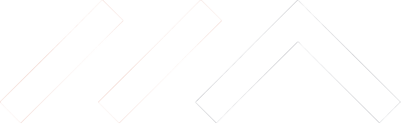
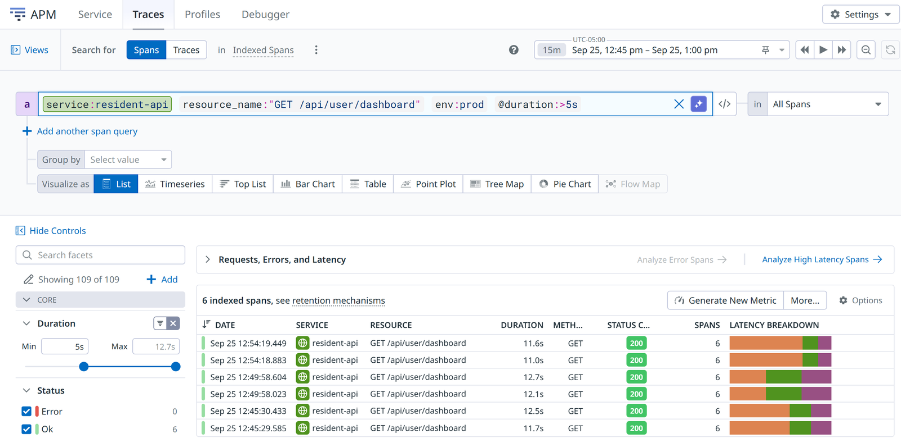
APM → Traces · older than 15 minutes = indexed spans, a sample
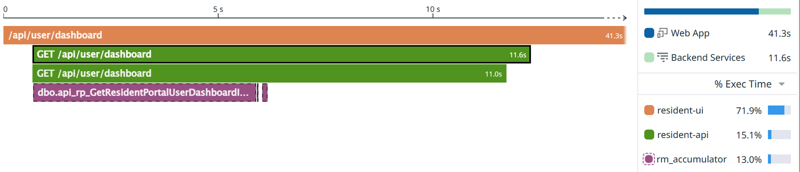
Flame Graph · shape and gaps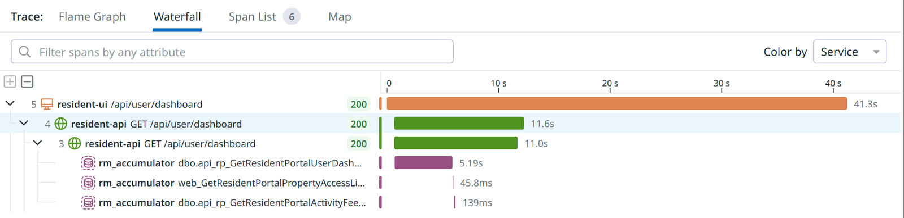
Waterfall · expand all
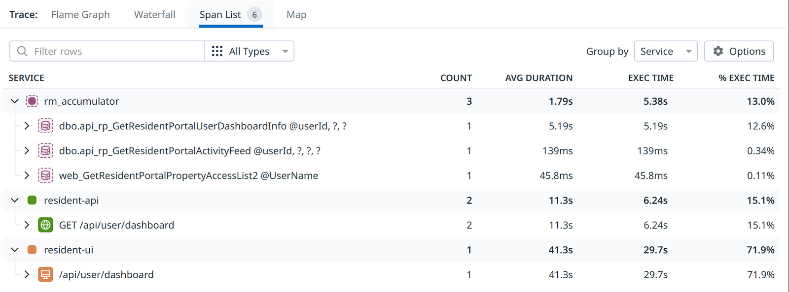
Span List · read Exec Time
Tracing records the calls out of our code. When our own code is busy, tracing has no data for that time.
Span List · resident-api
Exec Time 6.24 s
11.6 s span minus 5.4 s of SQL = the gap
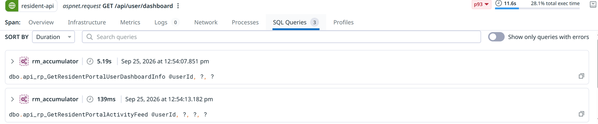
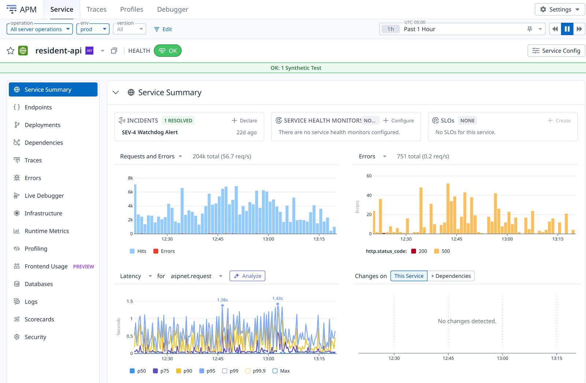
Check these first (G10)
Our ASP.NET endpoints report under two:
aspnet.request
the whole request, as IIS and ASP.NET handle it
aspnet_webapi.request
the part inside our Web API controller
prod, qa or dev
Ask in English → Claude runs the queries · the URL needs ?toolsets=all (G11)
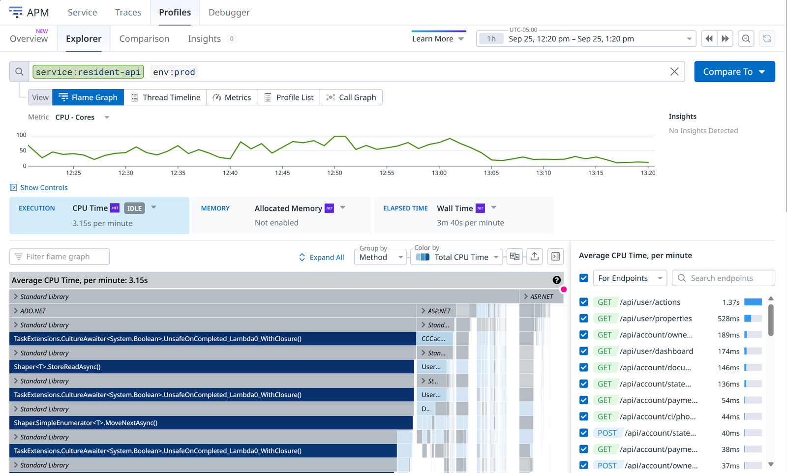
running only · the default
running + waiting
Slow request? Use Wall Time (G1)
Wall counts idle threads too: filter to your endpoint and code (G2)
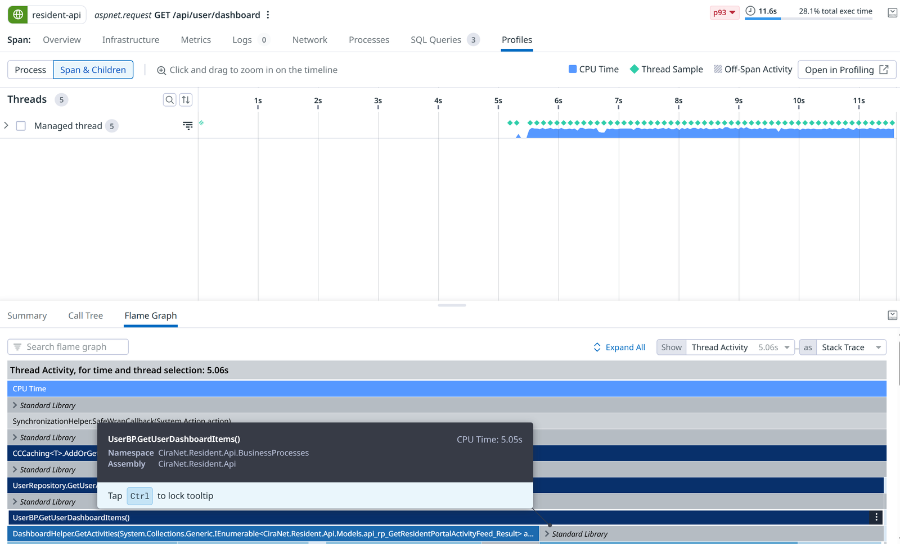
Span → Profiles · the gap = UserBP.GetUserDashboardItems, 5.05 s · async nests under the awaited call (G4) · line 0 until DX-1570 (G5)
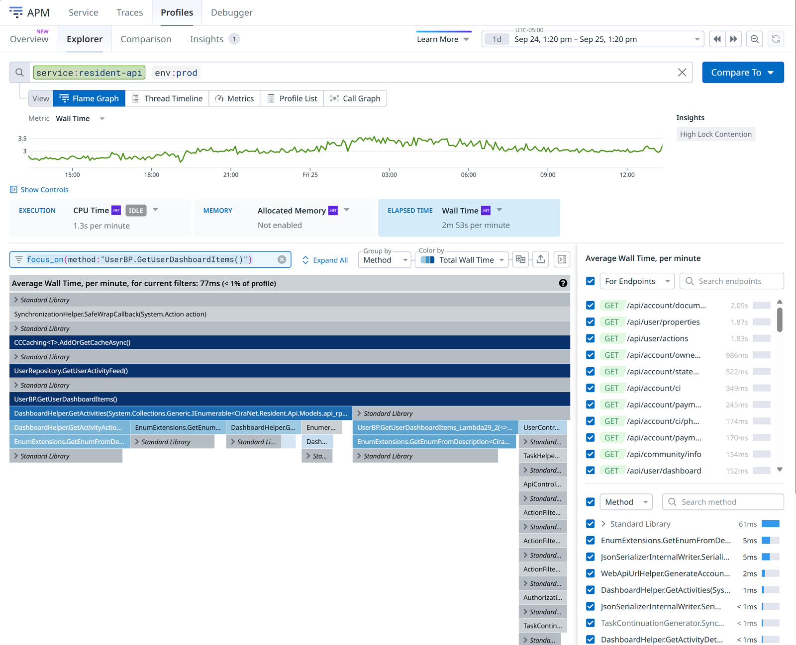
Filter flame graph, not the Method list (G3)
focus_on(method:"UserBP.GetUserDashboardItems()")
Every feed item × every property calls GetEnumFromDescription → GetCustomAttribute
≈ ⅓ of the endpoint · under 1% of the service
Our code is wide → fix the code
Waiting is wide → fix the query
At most 1 snapshot per exception type, per server, per hour (G13) · not every exception gets one (G14)
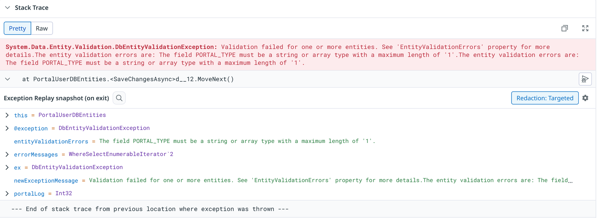
Each line is a variable and its value when the exception left this method · prod, identity-api
Dev only today: management-api (G15) · strict redaction blocks logpoints in prod (G16)
FilesController.cs line 53, template, conditioncurl from the second tabSeen while building this course: two runs, two methods · "30 requests" from sampled spans · a Jira draft built on CPU Time
Median flat · one window · every host · straight back to baseline → real regression, or something else?
Trace, then profile
Parts 1 and 2
Exception Replay
Error Tracking → issue → Stack Trace
Live Debugger
management-api, dev, for now
Claude can do all three · check its work (C1–C5) · if a debugging feature doesn't work, check G13–G20
All on the cheat sheet · keep three: Wall Time, the flame graph filter, never a rate from span counts
Every prompt and click path, one page
Your own service, in the #ai-exchange thread, within two weeks
Two minutes; it shapes the next version
Found something worth fixing? P8 drafts the Jira ticket · check its evidence first